电机驱动实现分析¶
- stm32f103c8t6
- 烧录器：J-Link Dp-link
- stm32cubemx
分析¶
- 实现与树莓派的I2C通信获取速度指令
- 通过FOC算法控制电机速度：
- 实现与as5047的SPI通信获取编码器数值
- 实现电流的采样，本质为电压，需要使用ADC模块
- 实现SVPWM输出
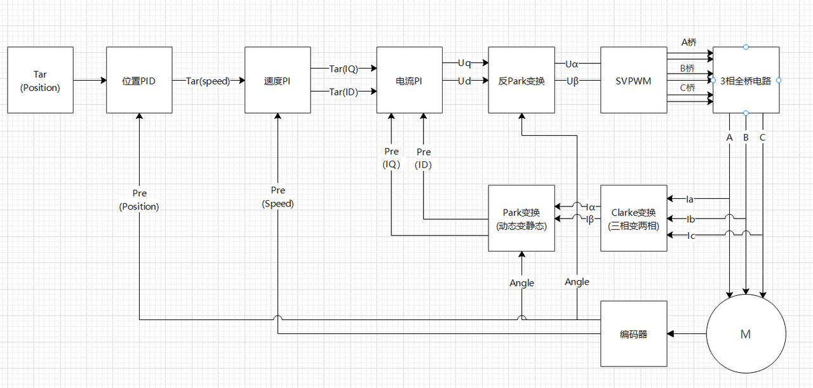
上图中的速度控制不在考虑之内，通过编码器获得速度对速度进行控制即可,先实现电机的控制.
原理图¶
FOC控制¶
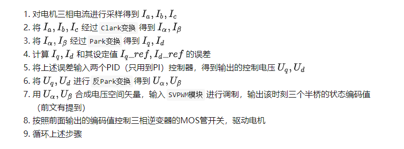
1.电流采样¶
一定有I_a+I_b+I_c=0，所以只需要获得其中两个
实际PCB设计电路的时候：开尔文接法(Kelvin connections)
2.Clark变换¶
电流的方向定义应当是以流向中心为正方向，也即流入电机为正方向
三相坐标系：以\(I_a,I_b,I_c\)为基向量的坐标系
但实际上对于一个平面中的坐标系，只需要两个即可
定义新的\(\alpha,\beta\)坐标系
定义如下的基向量：
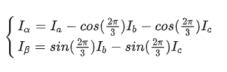
这个公式可能由于电流方向定义的不同正负号有所差别，下面矩阵定义的是更常见的形式，按照矩阵进行推导
(？？？？？？？？？？这里的推导和代码中不一样)
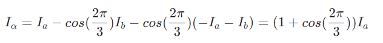
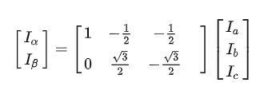
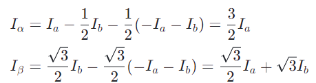
前面乘以\(\frac{2}{3}\)是等赋值变换，乘以\(\sqrt{\frac{2}{3}}\)是等功率变换，这里是等赋值变换，所以是：
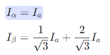
这里和代码是能够对上的
经过上述操作后，少了一个控制变量？？？？
3.Park变换¶
\(I_a,I_b,I_c\)是正弦波，\(I_{\alpha},I_{\beta}\)也为正弦波
将\(\alpha,\beta\)坐标系旋转\(\theta\)，\(\theta\)为电机电角度，得到\(d,q\)坐标系，
该坐标系随着转子旋转
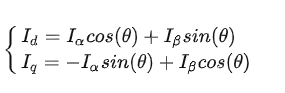
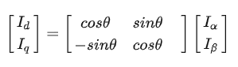
电角度的测量
_normalizeAngle((shaft_angle + sensor_offset) * pole_pairs -zero_electric_angle)
上述中有多个变量
编码器获得的角度：angle，这里的角度可以经过一个低通滤波后用于其它的计算
轴角：shaft angle = angle * direction - sensor offset
direction：指顺时针还是逆时针，由于编码器安装不同，所以这里也可能不同
sensor offset：可能指编码器角度与电机机械角度的差值，如果不使用电机机械角度的话，这个值可能无关紧要
electric angle：每一对极所占的空间中的角度定义为360度电角度
电角度的计算：
electric_angle = normalize(angle * direction * pole_pairs - zero_electric_angle)
zero_electric_angle：相当于电角度在-90度时，编码器的值 为什么是-90度：因为磁场要超前转子90度，所以转子在-90度时期望磁场角度为0度
所以测量的方法为，使转子在电角度原点，然后测量编码器的值
具体操作为：
开环设置\(U_q=V,U_d=0\)，电角度设置为-90度，测量此时编码器的值即为zero_electric_angle
电压的设置方法会让它与A相平行，然后由于电角度设置为-90，所以是落后A相90度
4. I_{d-ref},I_{q-ref} 的选取¶
上述两个变换的本质是将转子磁链进行了解耦，分为转子旋转的径向和切向两个方向
其中，\(I_q\)是期望力矩输出，是切向方向的；\(I_d\)是转子径向的，希望它为0
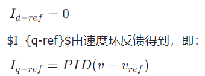
5.计算U_q,U_d¶
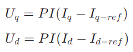
6. 反Park变换计算\(U_{\alpha},U_{\beta}\)¶
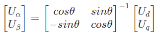
7.SVPWM模块¶
注意，这里没有使用反Clark模块输出三个电压，其原因为：
如果使用反Clark变换那么会得到3个正弦波输出的电压，实际上直接输出正弦波是很复杂的事情，所以使用SVPWM来代替正弦波
8.as5047相关¶
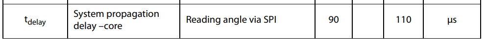
An SPI transaction consists of a 16-bit command frame followed by a 16-bit data frame.
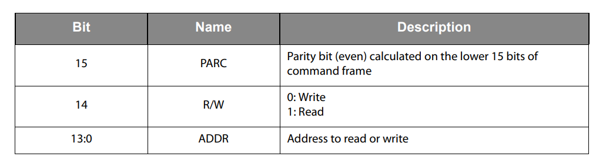
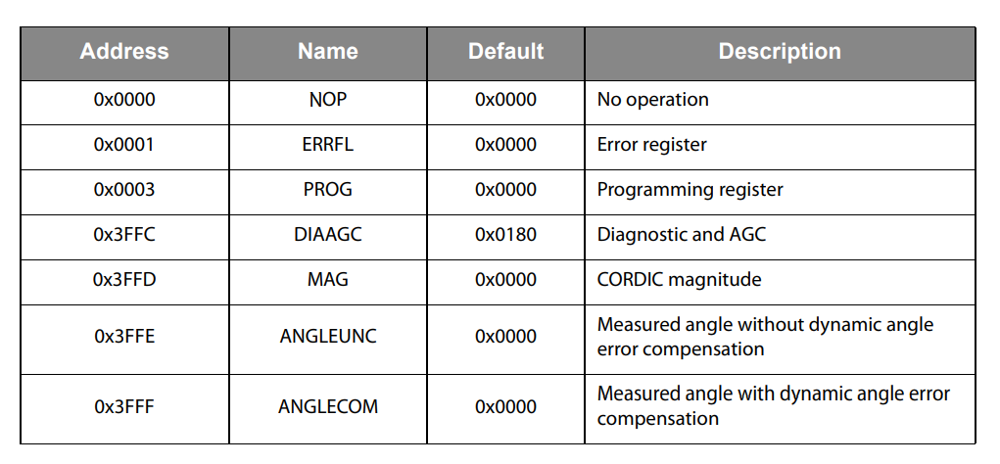
I2C通信¶
I2C从机HAL库硬件中断接收实现方式主要参考：https://blog.csdn.net/weixin_42397123/article/details/110137296
I2C 总线必须外部上拉，猜测可能不上拉可能导致通信错误
树莓派内部有上拉
开发注意事项¶
目前i2c通信内容为：
00 ff xx xx xx xx ff
第一个字节可能是地址之类的，一定存在
第二个字节与第七个字节是校验位，为ff，后续还可以设计奇偶校验之类的
中间为float的4个字节
HAL_I2C_Slave_Receive_IT接收信息的大小为7
目前使用的USB转I2C调试工具使用方法参见相应手册，相关文档链接:https://pan.baidu.com/s/16rViJ_53XLI5BQ2qD5PWSw
目前i2c通信存在卡死的情况，在以下两种情况需要reset（DeInit然后Init）：
-
校验位错误
-
每隔2s